04 Directions changed
Base (main)

PR
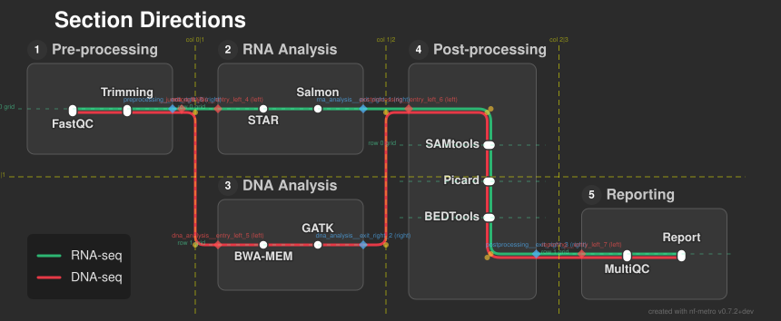
23 changed out of 168 total renders. Generated 2026-06-24 20:32 UTC.
nf-metro
generates metro-map-style SVG diagrams from Mermaid graph definitions.
This page is automatically generated for every pull request and shows
only the renders that changed compared to the
main branch.
Use it to check that code changes produce the intended visual result without unexpected side-effects on other diagrams. Each entry shows the base (main) render on the left and the PR render on the right. Use the toggle buttons to switch between side-by-side, base-only, and PR-only views.
What to look for:
Advisory only — nothing gates on these. Lower is better; green improved, red regressed.
| Render | Crossings | Near-horiz. | Lone diag. | Label strikes | Excess gaps | Wasted canvas |
|---|---|---|---|---|---|---|
| 04_directions | 0 | 0 | 0 | 0 | 0 | 34% |
| rnaseq_auto_debug | 0 | 0 | 0 | 0 | 0 | 21% |
| rnaseq_sections_manual | 0 | 0 | 0 | 0 | 2 | 17% |
| fold_double | 0 | 0 | 0 | 0 | 0 | 32% |
| fold_fan_across | 0 | 0 | 0 | 0 | 0 | 32% |
| fold_stacked_branch | 2 | 0 | 0 | 0 | 0 | 29% |
| junction_entry_reversed_fold | 0 | 0 | 0 | 0 | 0 | 63% |
| lr_to_tb_top_drop_two_lines | 0 | 0 | 0 | 0 | 0 | 60% |
| lr_to_tb_top_two_lines | 0 | 0 | 0 | 0 | 0 | 59% |
| reconverge_reversed_fold | 2 | 0 | 0 | 0 | 0 | 29% |
| tb_convergence_straight_drop | 0 | 0 | 0 | 0 | 1 | 68% |
| tb_internal_diagonal | 0 | 0 | 0 | 0 | 0 | 55% |
| tb_left_exit_step | 3 | 0 | 0 | 0 | 0 | 46% |
| tb_lr_exit_left | 0 | 0 | 0 | 0 | 0 | 51% |
| tb_lr_exit_right | 0 | 0 | 0 | 0 | 0 | 58% |
| tb_passthrough_continuation | 0 | 0 | 0 | 0 | 2 | 62% |
| tb_passthrough_trunk | 0 | 0 | 0 | 0 | 0 | 55% |
| tb_trunk_through_fan | 0 | 0 | 0 | 0 | 1 | 63% |
| longread_variant_calling | 19 | 0 | 0 | 0 | 1 | 19% |
| rnaseq_auto | 0 | 0 | 0 | 0 | 0 | 21% |
| rnaseq_sections | 0 | 0 | 0 | 0 | 2 | 17% |
| tb_file_termini | 0 | 0 | 0 | 0 | 1 | 48% |
| pipeline_rnaseq_auto | 0 | 0 | 0 | 0 | 0 | 21% |



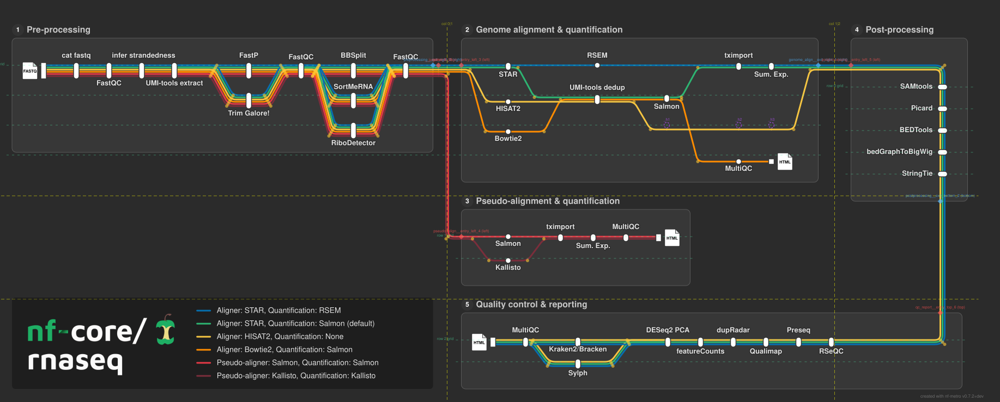
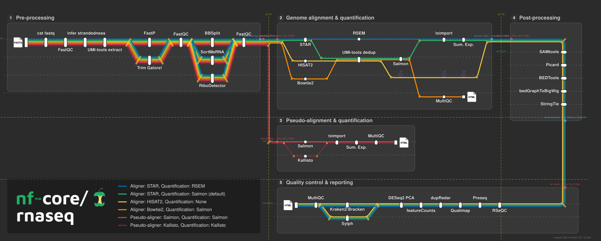
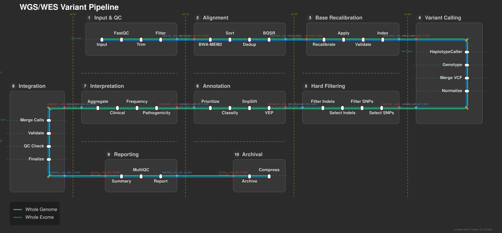
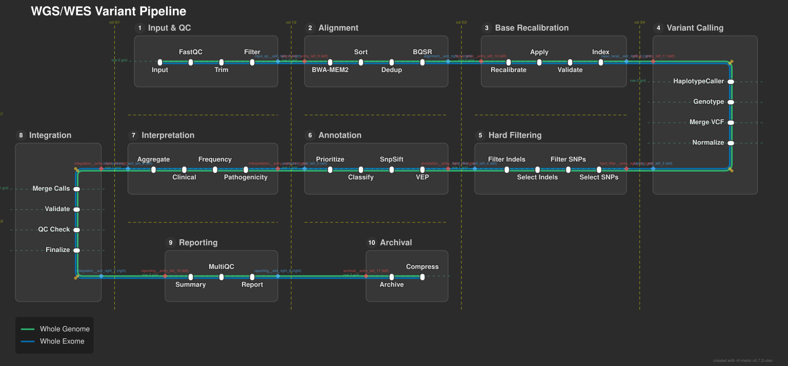

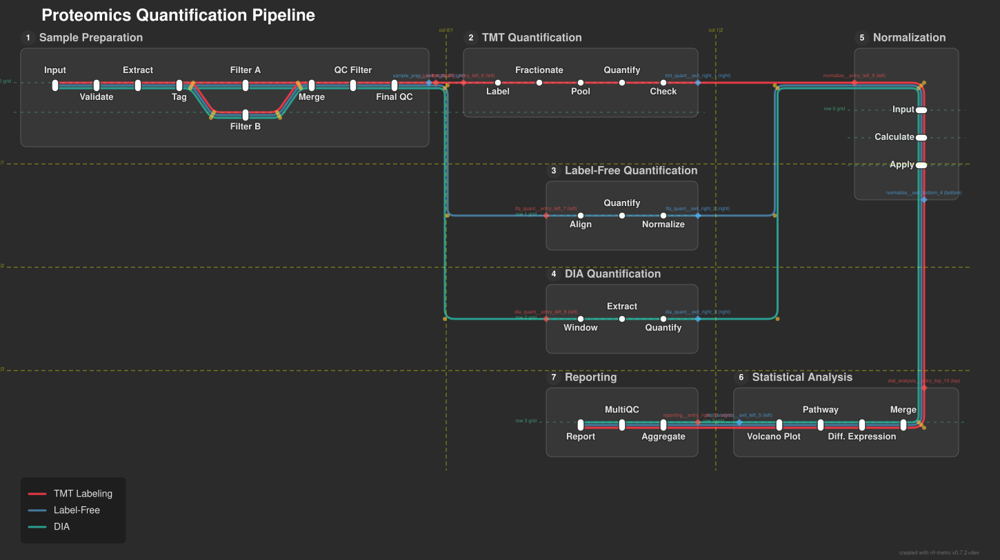

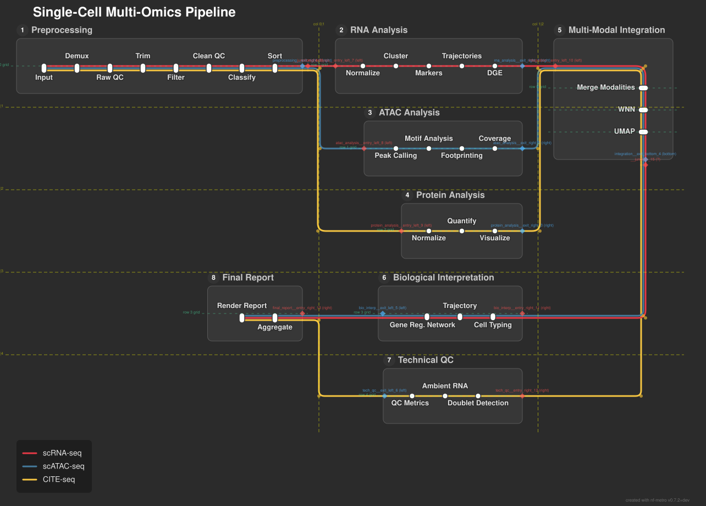
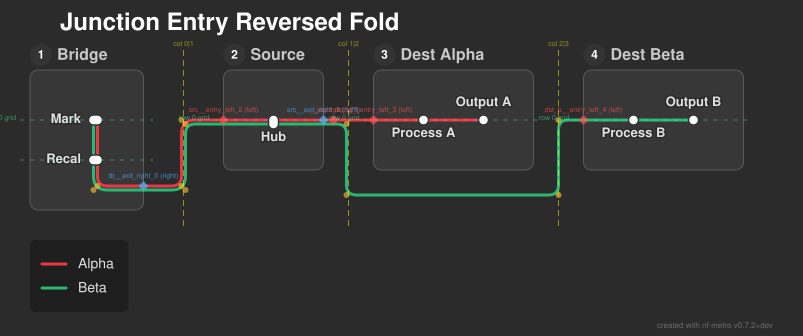
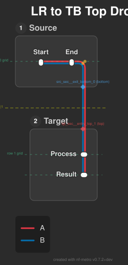
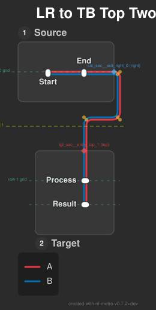
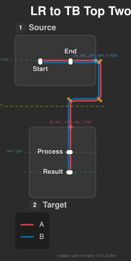
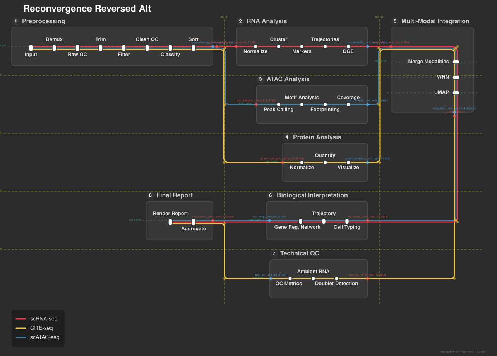
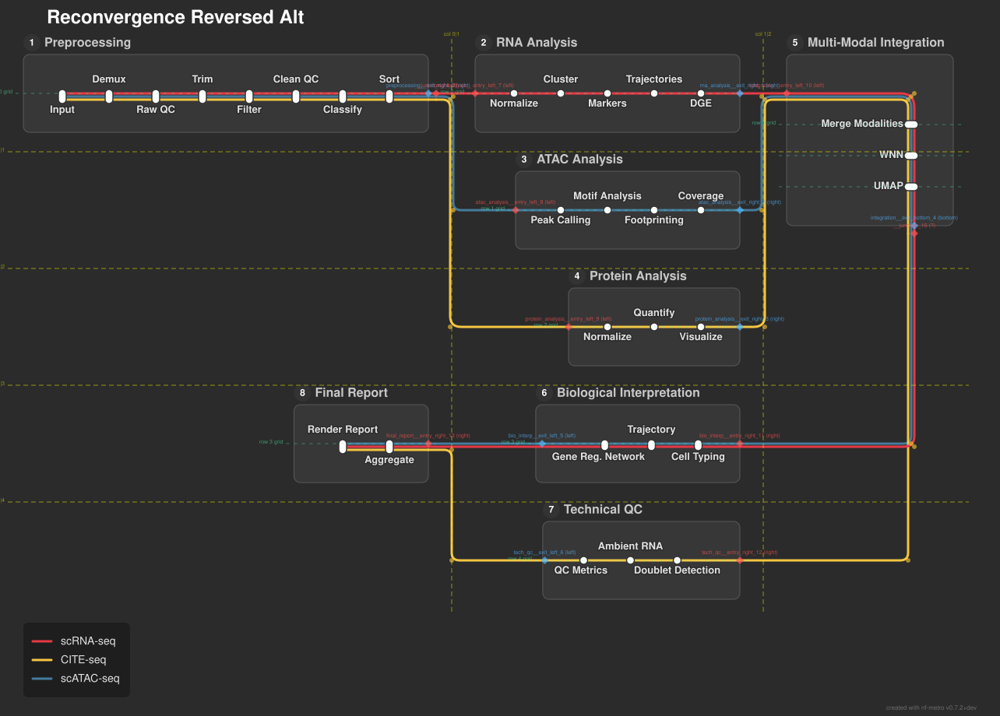
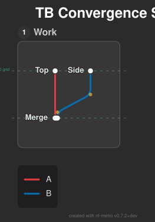
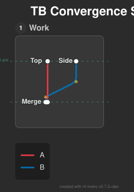
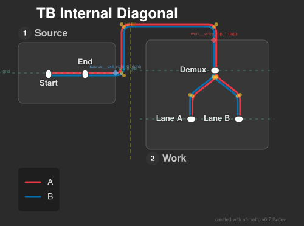
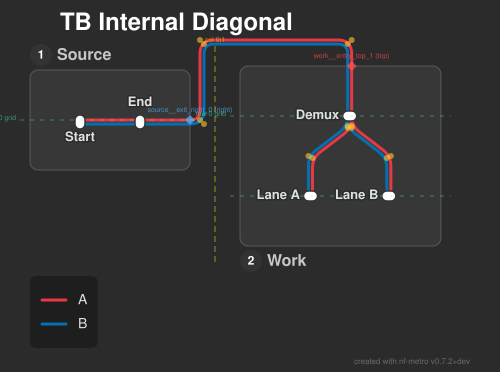
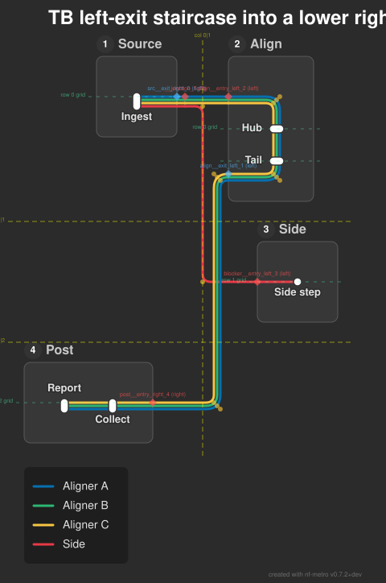
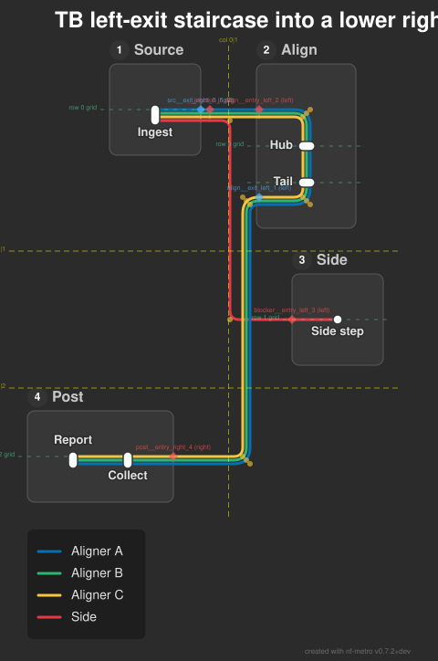
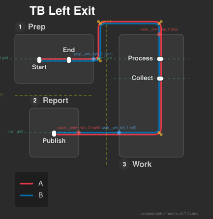
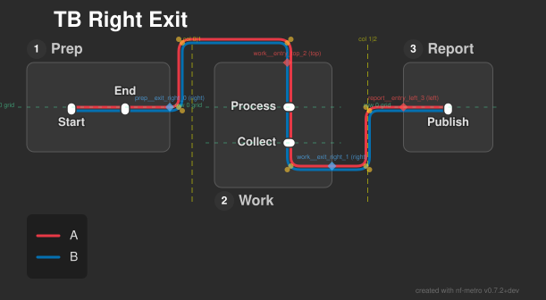
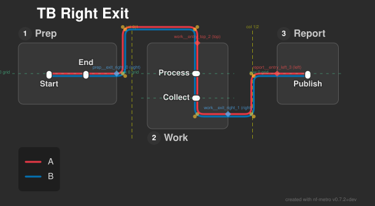
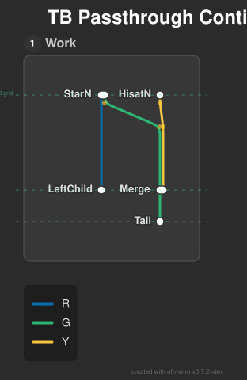
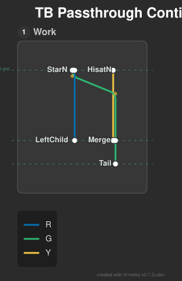
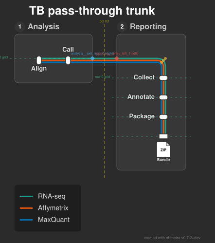
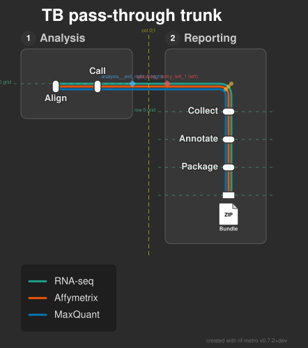
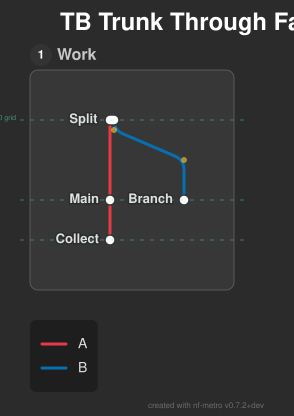
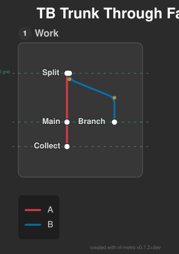
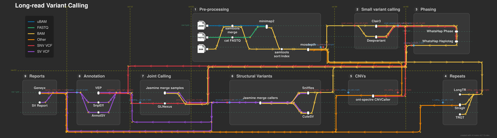
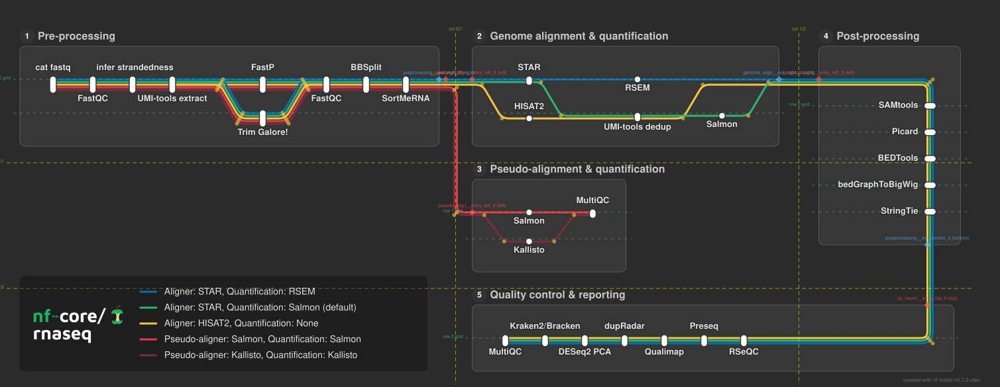

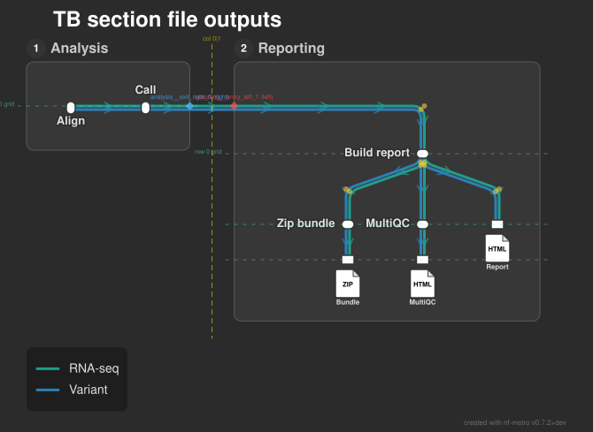
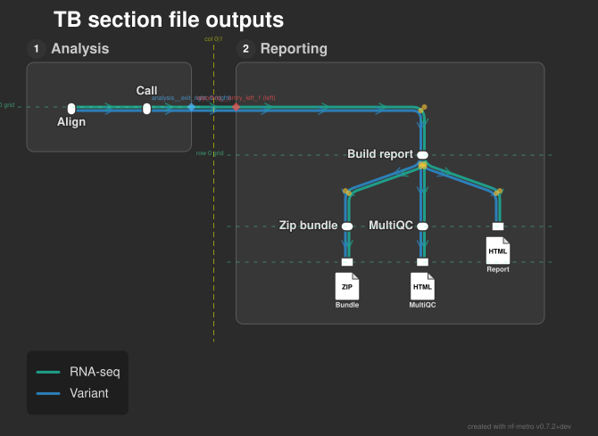